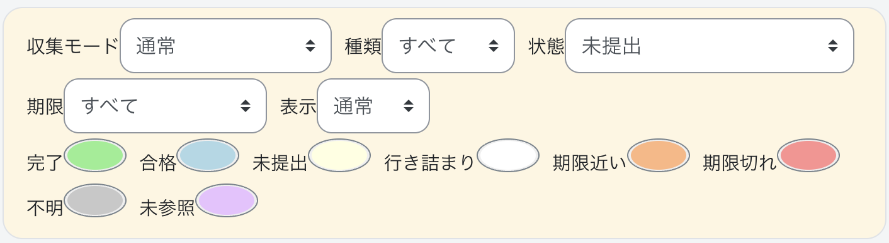

Duedle
使い方
はじめて使う方へ
まだDuedleを入れていない方は、導入方法をご覧ください。
課題を確認する
- 「課題を更新」を押す
課題や小テストの情報を読み込みます。更新が終わるまで、元のページを開いたまま待ってください。
- 気になる課題を開く
課題は横並びで表示されます。課題一覧は横にスクロールできます。
課題を押すと、それぞれのページへ進みます。
一覧で分かること
各課題の期限、提出状況、残り時間などを確認できます。小テストでは得点や受験回数も表示されます。取得できない情報は「?」や「不明」と表示されることがあります。
一覧は、情報を取得した時点の状態です。提出できているか、最新の期限や成績がどうなっているかは、課題・小テストのページでも確認してください。
更新の表示について
- 最終更新
- 「課題を更新」による全体更新が最後に正常完了した時刻です。自動更新や途中終了では変わりません。
- クールダウン
- 更新には3時間のクールタイムがあります。ボタンに残り時間が表示されます。
Moodleの表示中は、自動更新も行われます。自動更新は不定期に行われるので、課題確認の際には手動更新することを推奨します。
課題を隠す・元に戻す
一覧の表示・非表示
「一覧を隠す」を押すと、課題一覧の表示が閉じます。「一覧を表示」を押すと戻ります。
1件ずつ隠す・戻す
各課題の右上にある、縦に並んだ3つの点を押し、「一覧から削除する」を選ぶと、その課題だけを隠せます。戻すときは「表示」を「非表示」にして、同じメニューの「一覧に戻す」を選びます。最後に「表示」を「通常」に戻してください。
複数の課題をまとめて隠す
- 「課題を選択」を押します。
- 隠したい課題の「この課題を選択」すべてにチェックを入れます。
- 「選択した課題を隠す」を押します。
隠した課題を元に戻す
- 「表示」を「非表示」にします。
- 「課題を選択」を押して、戻したい課題すべてにチェックを入れます。
- 「選択した課題を戻す」を押します。
- 「表示」を「通常」に戻します。
見つからない場合は、「種類」「状態」「期限」をそれぞれ「すべて」にしてみてください。
課題を隠しても、Moodle上の課題や提出ファイルが削除されることはありません。
課題を絞り込む・色を変える

- 種類
- 提出課題と小テストを切り替えます。
- 状態
- 「完了以外」「未提出」など、課題の状態で絞り込みます。
- 期限
- 「24時間以内」「今週」など、期限で絞り込みます。
- 表示
- 「通常」は隠していない課題、「非表示」は自分で隠した課題、「すべて」は両方を表示します。他の絞り込み条件も同時に適用されます。
たとえば、まだ終えていない課題を探すなら「状態」を「完了以外」にします。絞り込みを解除するには「種類」「状態」「期限」を「すべて」に戻してください。
各課題の色を変える
各状態の右にある色のついた部分を押し、好きな色を選びます。
状態の名前の意味
- 完了
- 提出済み、または小テストで満点を取っている状態です。
- 合格
- 小テストで必要な点数に達しているものの、満点ではない状態です。
- 未提出
- 課題を提出していない、または小テストに回答していない状態です。
- 行き詰まり
- 小テストで受験回数の上限に達し、合格点に届いていない状態です。
- 期限近い
- 期限が3日以内で、まだ提出していない課題です。
- 期限切れ
- 期限を過ぎた状態です。
- 不明
- 小テストの点数が非公開などの理由で、結果を判定できない状態です。
- 未参照
- まだ確認していない課題です。
「収集モード」について
「通常」のまま使用してください。「CSE用（別タブ）」は、別タブを使って情報を取得する必要がある場合のモードです。更新中に一時的なタブが開くことがあります。
画面の色・見た目を変える
ページ右上の「Duedle設定」を押します。
カラーモードを選ぶ
- ブラウザと同期
- ブラウザが使っている明るい表示・暗い表示に合わせます。
- ダークモード
- 暗い背景にします。
- ライトモード
- 明るい背景にします。
- ほのぼのモード
- 淡い黄色や水色を使った配色にします。
4つから1つを選びます。選択中の項目に印が付きます。
iOS風モードを使う
同じメニューの「iOS風モード」を押すたびに、ONとOFFが切り替わります。デザインがiOS風になります。iOS以外でも使用可能です。
カラーモードとは別の設定で、重複可能です。たとえば「ほのぼのモード」と「iOS風モード」を同時に使えます。
課題や問題文の配色について
ダークモードでは、問題文・課題説明も暗い配色にします。強調色は読める明るさに調整します。画像や図そのものの色は変更しません。
コースのページを使いやすくする
スマホなどでは、「セクション一覧」を「コースの設定」から開けます。画面が広い場合は、ページの右側に表示されます。
目的の授業回へ移動する
「セクション一覧」を開き、見たい授業回や見出しを押すと、その場所へ移動します。「▲トップへ戻る」でページの先頭へ戻れます。
閉じた項目を隠す
コースのページで、右上の「Duedle設定」を開きます。「コース」の中に「閉じたタブの表示」があります。
「閉じたタブの表示」をOFFにすると、コース内で折りたたんだ項目を隠せます。ここでいう「タブ」は、授業回などのまとまりのことです。ブラウザのタブではありません。
隠れた項目をもう一度見たい場合は、「閉じたタブの表示」をONに戻してください。
「一般」「第1回」は折りたたまれていますが、見出しは一覧に残ります。

閉じた「一般」「第1回」が隠れ、開いている項目だけが残ります。

コースの表示順を変える
- 右上の「Duedle設定」→「コースの並び替え」を押すと、「コース概要の表示順設定」が開きます。
- 各コースの左側にある移動用のつまみを動かします。スマホでは長押ししてから上下へ、パソコンではドラッグして移動します。
- ページの保存操作で変更を確定します。
- ダッシュボードの「コース概要」で、並び順に「設定した表示順」を選びます。
キーボードでも操作できます。移動用のつまみにフォーカスを合わせ、SpaceまたはEnterで選択し、上下矢印で移動して、再びSpaceまたはEnterで確定します。Escで取り消せます。
最近見たページや提出ファイルを開く
「最近開いたページ」から、記録されているページへ戻れます。
提出ファイルのリンクを押すと、対応ファイルはダウンロードせずにブラウザ上で確認できます。
困ったとき
課題が出てこない・一部の課題が見つからない
- 「一覧を表示」があれば押します。
- 「課題の設定」で「種類」「状態」「期限」「表示」をすべて「すべて」にします。
- 「最終更新」を確認します。まだ取得していない、または情報が古い場合は、更新できる時間になってから「課題を更新」を押します。
それでも見つからない場合は、Moodleのコースページで課題が公開されているか確認してください。
更新に失敗した・更新が中断された
通信状態を確認し、画面の案内に従ってもう一度更新してください。更新中はページを閉じたり、再読み込みしたりせずに待ちます。
途中まで取得できた情報や、それまで保存されていた課題は残ります。
別の端末にも設定や課題は引き継がれる？
Duedleには、端末やブラウザをまたいで課題・設定をまとめて引き継ぐ機能はありません。別の端末では、その端末で拡張機能を有効にし、課題情報を取得してください。
Duedleへのお問い合わせ
不具合、改善のご要望、使い方の質問は、Googleフォームからお送りください。返信をご希望の場合は、フォームに返信先のメールアドレスを記入してください。
お問い合わせフォームは準備中です。
お問い合わせフォームを開く授業や課題の内容は担当教員へ、大学のシステムに関するお問い合わせはMoodleの「サイトサポートに連絡する」へお願いします。